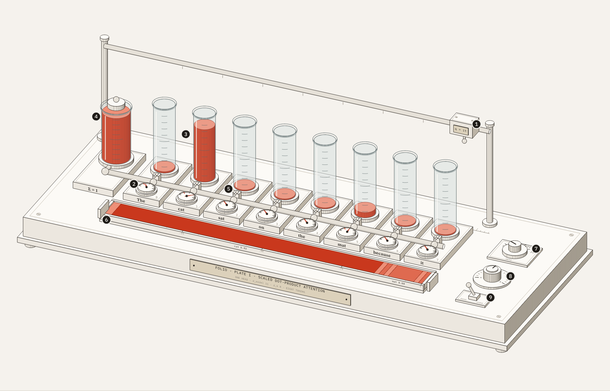
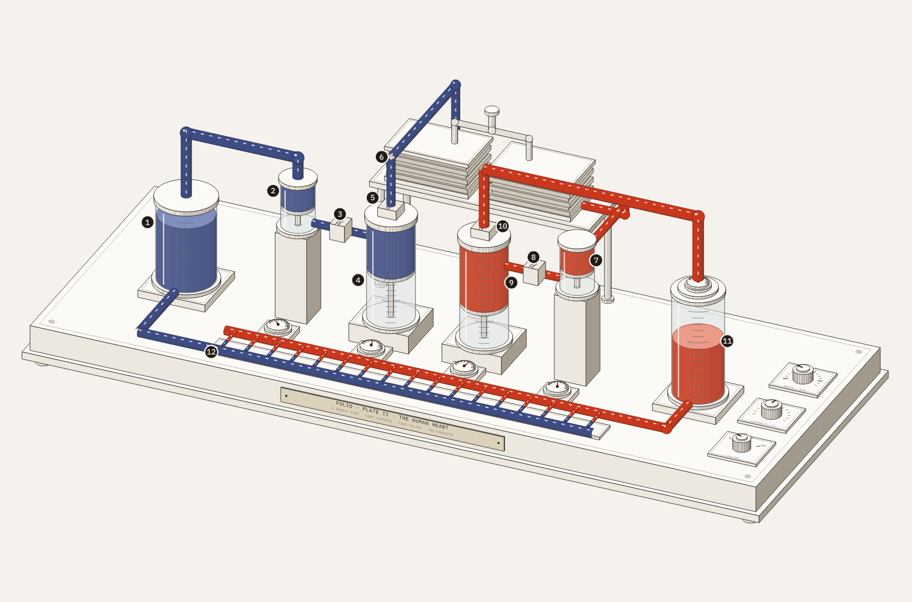
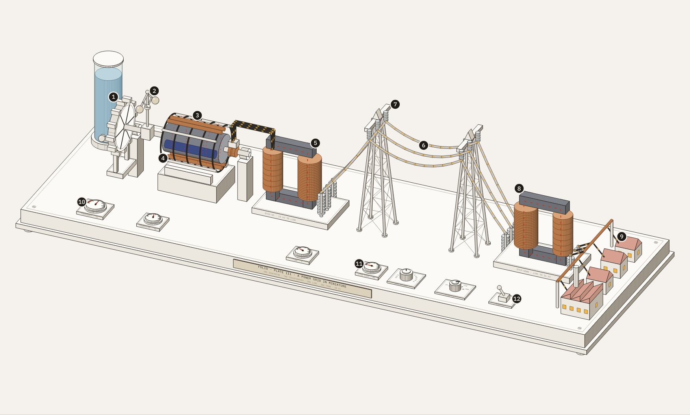
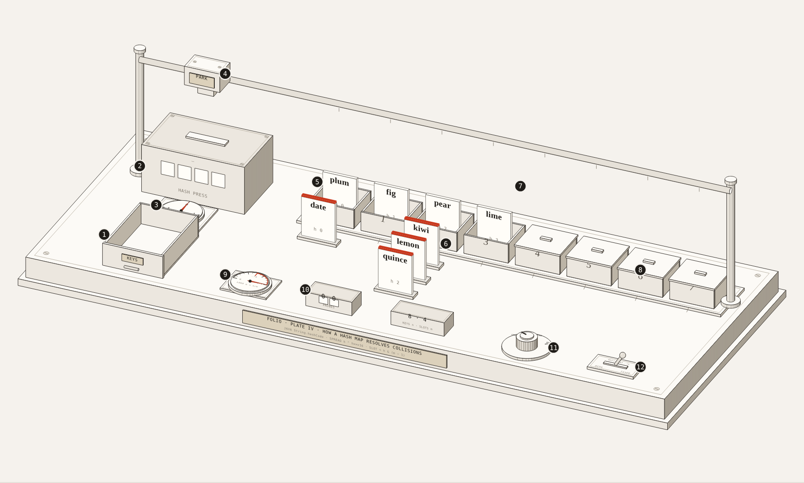
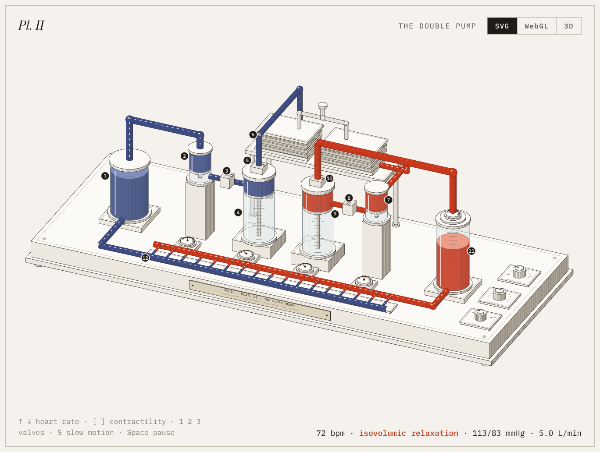
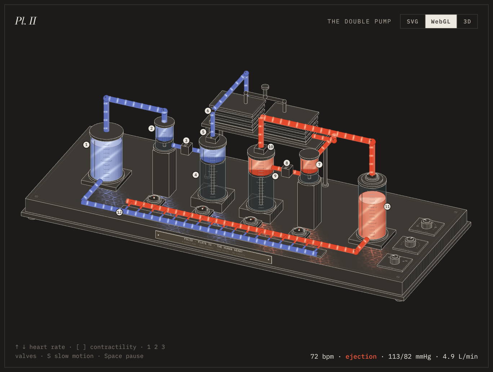
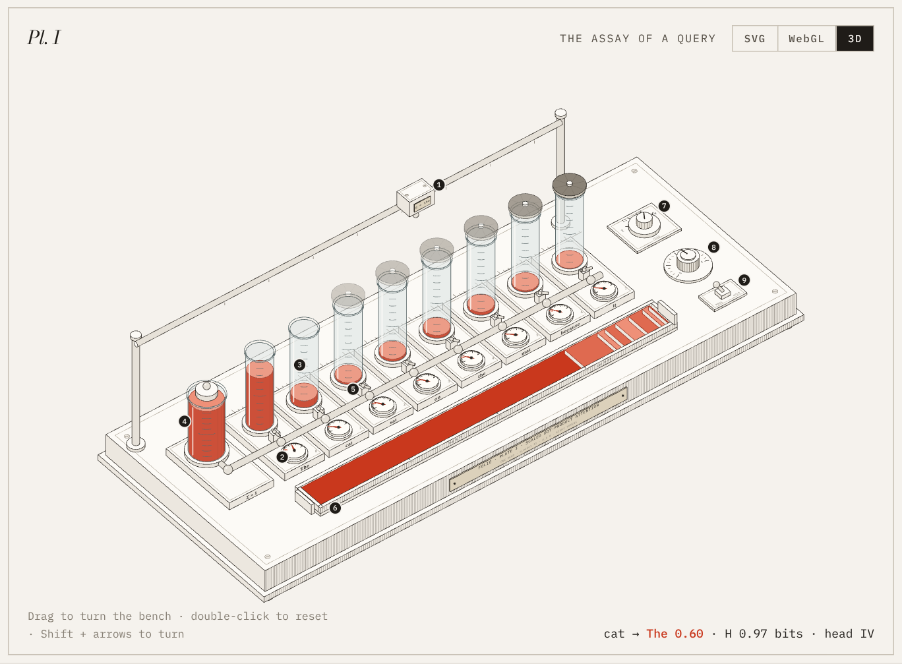
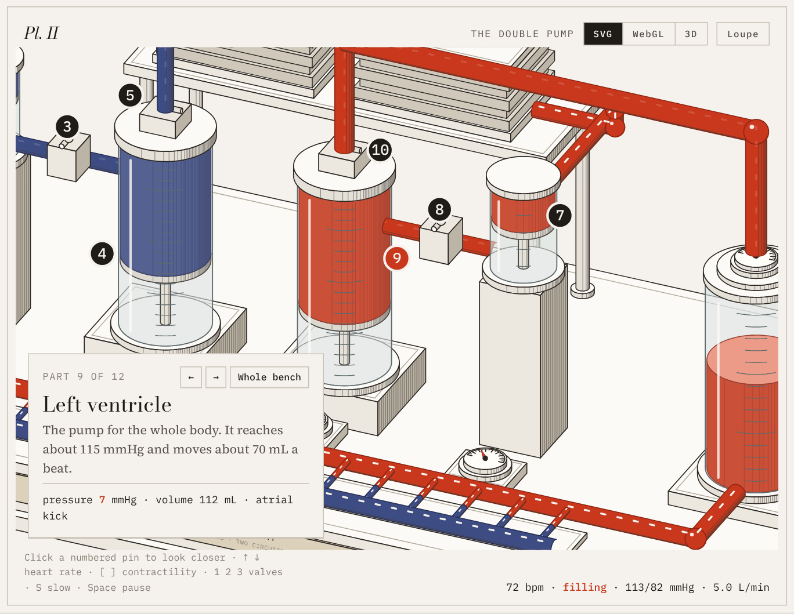
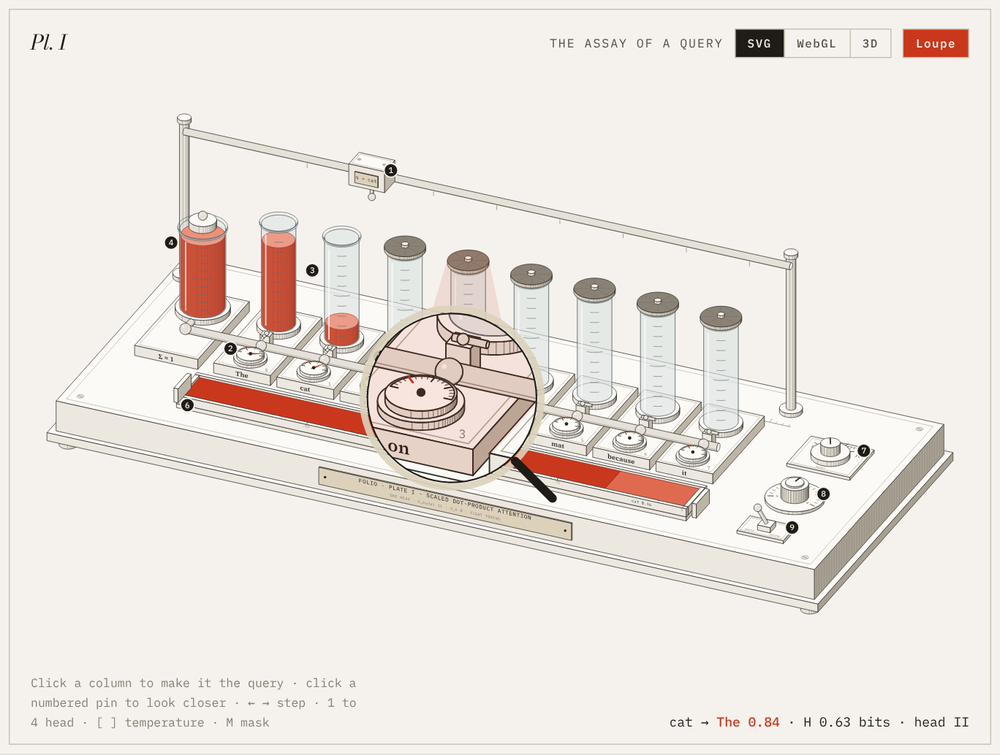

01An instrument, not a diagram
Most explanations are drawn as boxes joined by arrows. The boxes name the parts, but the motion the arrows stand for happens only in the reader's head, and that is where understanding is lost.
A Folio plate takes a different route. It asks what physical instrument would perform the idea, builds that instrument out of small, precise parts, and lets you operate it. Softmax becomes a sealed reservoir that can only share out one unit of fluid. A heartbeat becomes two piston pumps and four valves that open only when the pressure behind them wins.
Then the plate is mounted the way a museum mounts a specimen: a catalogue entry, numbered pins with a key, and wall texts that walk you from the first term of the formula to the last.1
02The collection
Four plates are on view. All are live: the figures run on the same equations their wall texts describe, and every control you touch changes the numbers everywhere at once.
Plate IAttention as an assay bench. The query carriage walks the sentence on its own; click a column to take over.Full plate →
In Plate I, eight glass columns stand for eight words. A query carriage parks above the word that is asking, a dial for every word reads its score, and the reservoir pours one unit of attention between them by softmax. Four heads, a temperature knob and a causal mask are on the bench.2
In Plate II, the bench is laid out as the circulation itself: veins, right heart, lungs on a stand, left heart, an air chamber for the aorta and a bed of capillaries. You can slow the beat to a sixteenth, change the heart rate, or give it a narrowed or leaking valve and watch the pressures respond. A timing cam on each chamber turns once a beat.
Plate IIIA power grid in miniature. Water turns the wheel, the rotor's field sweeps the coils, and the town's windows hold steady while the frequency does.Full plate →
In Plate III, energy travels from falling water to a lit window. A flyball governor spins on the shaft and closes the water valve as the machine speeds up, the rotor's north and south poles sweep their field through the stator's copper, and the iron cores of two transformers carry an alternating flux. Raise the town's demand and the frequency dips; drop the line voltage and the losses climb with the square of the current; open the breaker and the machine runs away until the governor catches it.3
Plate IVA hash map as a sorting office. Keys are filed one by one; when two want the same bin, watch the office settle it.Full plate →
In Plate IV, the plate leaves physics for a data structure. Each key is a filing card. A hash press reads it with Java's own hashCode and shows the low bits in its windows, a dial folds them to a bin, and a carriage on a rail delivers the card. When two keys want the same bin the office settles it one of three ways: a chain of cards hung in front of the bin, or the carriage trying the next bin along, or bins further and further away, leaving a red trail for every extra look. Past three quarters full, the shutters lift on four more bins and every card is filed again.

Plate I · AttentionMachine learning. Scaled dot-product attention, four heads.
Plate II · The heartPhysiology. The cardiac cycle in five phases.
Plate III · The gridElectricity and magnetism. From water to lamp.
Plate IV · The hash mapData structures. Chaining, linear and quadratic probing.03Three ways to look
Each plate carries a small switch in its top corner. The instrument, the model and the wall texts stay the same; only the way you see the bench changes.



The light in the WebGL view only lands where you can see. Folio renders the drawing once more with every surface coloured by its role and uses that picture as a mask, so a glow never leaks through a part that stands in front of it.4 In 3D, the whole scene is rebuilt from the new viewpoint as you drag, about thirty times a second, all the way round: from behind, the bench shows its back, and the parts that were hidden come forward.
04Looking inside
A plate is dense on purpose, so it gives you two ways to get closer. Press any numbered pin, or a line of the key, and the plate glides in on that part. A card names it, says what it does, and shows its live reading: the left ventricle's pressure and volume as it beats, or a word's share of attention as the query moves.


The Loupe button hands you a magnifying glass instead. Move it over the bench to read an engraved scale or follow a needle without losing your place. Both tools come with every plate the skill makes, whatever the topic: the plate only has to say where its parts are and what each one should report.
05How a plate is made
The skill follows the same four phases for every idea, so a plate is correct before it is beautiful.
- BriefWrite the model first and test it against known numbers. Choose the instrument and map each term of the idea to a part.
- BenchLay the parts out in depth bands, engrave the geometry once, and redraw only what moves.
- MountAdd the catalogue entry, pins and key, controls, the three views, and four wall texts.
- ProofPhotograph it in light, dark and on a phone, zoom into the joints, turn it in 3D, and check every number against the model.
06Commissioning a plate
Ask for the idea, not the drawing. Folio chooses the instrument; if you already have one in mind, name it, along with any real numbers you care about.
/folio explain how a hash map resolves collisionsThis one became Plate IV: a sorting office with a hash press./folio explain backpropagation through one neuronFor a course page, with the gradients on dials./folio how does consistent hashing move keys when a server joinsA ring you can add a station to./folio explain how the kidney filters bloodA physiology plate in the manner of Plate II.07Installing Folio
One command installs it for Claude Code, for every project:
npx skills add Ramakm/folio-anatomy -g -a claude-code
Or clone it yourself, into your own skills or into a single project:
git clone https://github.com/Ramakm/folio-anatomy.git ~/.claude/skills/folio
# or, for one project
git clone https://github.com/Ramakm/folio-anatomy.git .claude/skills/folio
Then type /folio and name an idea. The repository also holds every plate's source, the drawing kit, and scripts to build and photograph a plate.
08Questions
Are the numbers real?
They are computed, not drawn. Each plate has a small model, and everything on the page reads from it. Where values are chosen by hand, such as Plate I's attention weights, the plate's last wall text says so.
What does a plate need to run?
Nothing but a browser. A plate is one HTML file with no dependencies. The WebGL view needs WebGL and falls back to the drawing without it.
Can it use my brand?
Yes. Every colour is a design token and the fonts are three lines of CSS. Swap them and the structure and engraving stay.
Does it work on a phone?
The plates are tested at 390 pixels wide. The view switch, the pins and the inspector all work by touch, and the 3D bench turns with a finger.
Can the parts really move?
Yes. Plate I's flow wheels spin as fluid pours, Plate II's pistons and timing cams run with the beat, and Plate III's water wheel, rotor, field and governor turn with the machine's true frequency, slowed so you can follow them. In Plate IV a carriage runs the rail, cards are filed and chained, and shutters lift when the table doubles.
What is the licence?
MIT, for the skill and for the plates.